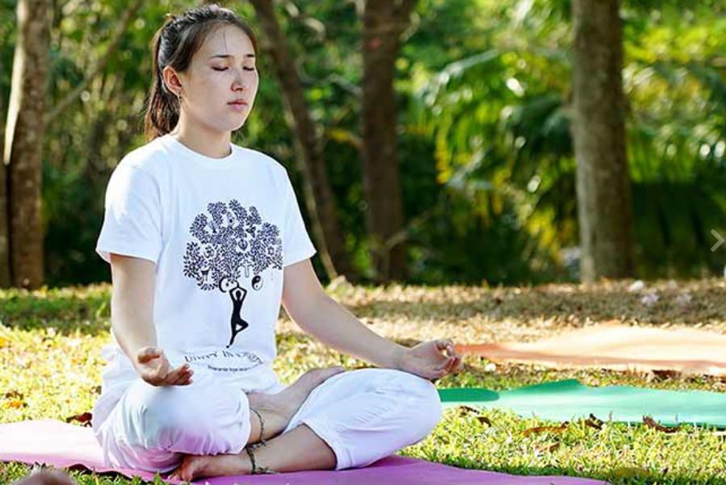

Meditation can be defined as a set of techniques that are intended to encourage a heightened state of awareness and focused attention. Meditation is also a consciousness-changing technique shown to have many benefits on psychological well-being.
Some key things to note about meditation:
1. Meditation has been practiced in cultures all over the world for thousands of years.
2. Nearly every religion, including Buddhism, Hinduism, Christianity, Judaism, and Islam, has a tradition of using meditative practices.
3. Helping to manage mental fatigue, depression, and anxiety
4. Meditation can also be used as a psychotherapeutic technique.
Types of Meditation
. Concentrative Meditation
. Mindfulness Meditation
. Breathing meditation
. Object focus meditation
. Impact of Meditation
Tips for Meditating
* Start slow: Begin by doing short sessions of around 5 to 10 minutes a day, and then work your way up progressively to longer sessions.
* Set a schedule: Try meditating at the same time each day—for a few minutes first thing in the morning, for example.
* Get comfortable: Sitting cross-legged on the floor is one option, but comfort is the key. You need to be in a position where you can sit for several minutes without getting uncomfortable, stiff, or restless.
* Focus on what you're feeling: Breathe naturally and notice the feelings and sensations you experience as you breathe in and out.